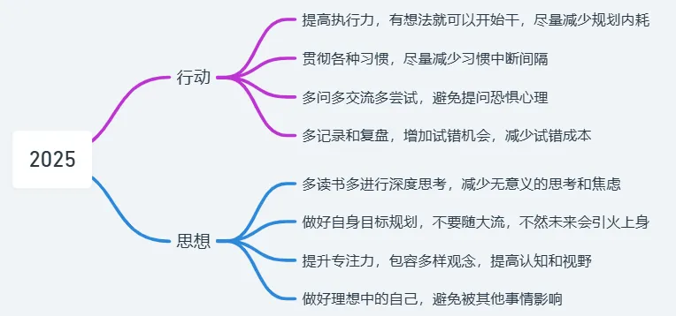

转眼2024也马上结束了，曾经期待的2024马上落下尾声。回想过往，些许记忆涌上心头。今年的总结我期望是文艺的样子，既然无法在表达上面有所精进，那就寄望于在写这方面愈发向上。
School
2024横跨了两个学校：本科学校和硕士学校。
ZZU
年初紧急完成了党员材料补充和考试，因为旷视面试通过，所以在考试之后就投身于旷视实习了。年前在家里面线上实习，并且找租房的地点，抢春运火车票（当时的票是凌晨四五点的，那也只能上了呀，人挤的根本走不动）。年后直接就线下去实习了，安顿住宿的地方，租房还被厕所的照片忽悠住了，到那里交完钱才发现不是照片上的卫生间，一月2750真的好贵呀，好小的一间房子。一直实习到了四月多回学校忙毕设，同时在学校线上实习了一个月左右就因为毕设离职了（后悔了，不然还能多干几个月）。然后就忙完毕设离校放假了。
USTC
下半年就开始了研究生校内生活，内心是从期待自信到失落萎靡。整个下半年就是无意义地上课，刚开始想做的点云方向中途被导师否掉，之后又过了挺久换方向，结果一下子确定了半学期的方向。这个学期就是看论文，上课，迷茫。研究生到底是需要的吗？这下整个不清楚了。
年末苦逼复习期末考试，感觉自己的时间根本不够用，可能是自己效率太低了，学习时间没有连续性。
不过多少和室友同学出去逛过吃过几次，总算没有白费这些时间。
Work
在旷视实习做的主要是自动驾驶跟踪模块的开发。认识了很多厉害的同学，算是第一段实习，学到了很多东西，虽然每天骑单车很苦逼的打工人生活，但还很有意义的。
基本全勤干满了，还拿了一个月的A绩效(薪资系数1.5)，先是干了一段开发的工作，中途转算法一段时间，然后又转开发接手上一个实习生工作了。
整个组内的氛围还是很不错的，实习生早十晚五，比较轻松，我还总是加班蹭夜宵😁。工作感觉激发了我entj的特性，规划各种东西，记录工作日报内容，探索各种小生活实验(habit)，感觉过得比较充实，连偶尔的娱乐也是感觉很有意义。
来到科大之后，将近年末还接了线上信竞的网课，教的基本都是没有什么基础的同学，也是上了几节课，算是补贴生活了。
Fun
今年去外面玩了很多地方，是为了自我情绪，还是为了视野探索？
工作时：和同学转人大；观三里屯；奥林匹克；鸟巢；水立方；故宫博物院；北京动物园；和学长去香山公园；
&同学：山西太原（柳巷；晋商博物院；山西省博物院；晋祠）、内蒙古呼和浩特（清真大寺；宽巷子；塞上老街；希拉穆仁草原；哈素海；银肯塔拉）
&学校活动：北京（航天城；古北水镇）
&宝宝：郑州（商场；博物馆；…；）、合肥（合柴；欧风街；天鹅湖；园博园；罍街）、南京（南京博物院；钟山；美龄宫；音乐台；总统府；鸡鸣寺；玄武湖；新街口；宜家）
Quest
1 Habits
Reading
接续23年下半年的习惯，今年从1月到8月都是密集的阅读，9月之后学校的事情多了就感觉力不从心，其实有时候还有很多娱乐的，这完全可以用到阅读上的。今年大概读了快20本书，很多书读的时候很认同里面的观点，但是读完过了很久我好像又忘记了书中的内容，正是印证了“读书不能为了完成目标而读，而要去理解和思考”这种观点。
Exercise
全年基本比较密集进行锻炼，可能锻炼在我这的定义并没有很高的门槛，它可能是每天的一个俯卧撑，每天的一次引体向上，每天的一次跑步等等。为了将锻炼变成习惯，初始我将阈值调的很低就是每天的一个俯卧撑，到工作后期基本明天能做四五十个俯卧撑了。在学校时候偶尔开启引体向上模式，也是从一个开始。来到USTC后，幸而有一两个健身的舍友，跟着他们玩健身，自己的体态一下子有了很大的改变，然后就一直坚持健身。到了年末考试原因，健身便暂时搁置。
Music
本人是对音乐一窍不通的，从来只会听歌，而且不习惯学习时听歌。工作时学完了B站的乐理课（虽然现在已经忘记了），之后回学校学唱歌发声技巧，虽然没有练习到位，还是学习了很多的技巧的。不过终究因为自己低水平起步，难有高就。
2 Thinking
我一直在思考我行动的得失，反思当下的处境，虽然这也会时不时忘却，但也时不时的捡起来。我好像一个学习模型一样，开始尝试某一项东西，在接受到世界的反馈之后就着手调优，周围人法则让我只能从周围学习到有用的东西，如果周围数据质量不行，我自己是不是也就废掉。因此我打算拓宽数据维度，于是就开启了读书这项任务。
我时常探索自己是什么，自己为什么会产生这种那样的心理，我到底做的对还是不对。我好像不清楚自己的内心，不知道自己想要成为什么样的人，一直还在为那个未定型的自己而挣扎改变。面向别人的要求，我时常存在一种与生俱来的羞耻感，没有自己的主见，只知道接受，扮演了一种大好人的形象。正因为这样，我可能时常缺乏一种威严。
原始的自我几乎不带任何抽象元素，也从不过分的吐槽和麻烦别人，不明探各种隐私，我是一个非常普通正常的人。不过我却发现平时的日常对话往往是需要这些元素才能活跃持久，表现正常一般只会扼杀掉对话过程。我察觉到了，那我是不是要成为这种抽象之人了呢？正像室友所说，我是一个没有预训练的模型，他们每天喂给我的都是脏数据，我一直就在这些脏数据里面学习，渐渐地我就携带了抽象元素。
3 Finance
来科大时就开始学习理财，刚开始也没有多少资金进去，就先基金慢慢投几十几百的玩，刚开始沉迷债基，后来因为债基收益太低，转向各种ETF基金了，债基能卖的都卖了，入手低波动、纳纳和标普。大牛市来之后跟着身边同学开始入场炒股，感觉自己赶上的是牛市末期，基本每天都心惊胆跳的，搞人心态。后来就不搞大a了，因为一直震荡自己也赚不到什么钱，总的来说大a里面赚了二百来块钱。过了几天我转向美股了，不过年末美股情况大跌已经寄了。
4 Affection
说实话，之前从未经历过的我，对感情总是怀着一种朦胧的想象。我以为这就像小说或影视里的那样美好，充满着期待。但真正走进去后，才发现现实中的感情远比想象中复杂得多。
这年有很多美好，也有一些波折，但我们都在努力理解和包容彼此。我从一开始的不知所措，到慢慢学会体谅和关心；从不懂得表达，到试着说出内心所想。这让我意识到，爱不仅仅是一时的悸动，更多的是日常生活中的相互陪伴和理解。
虽然有时候还是会笨拙，会犯错，但能感受到自己在这段关系中一点点地成长。或许这就是情感的神奇之处吧，它教会了我如何去爱，更教会我如何成为一个更好的自己。
Flags
1 2024 Flags Status
回看去年立下的Flag，发现大多没有完成，而且随着时间推进，认知和目标都在发生变化，可见有一个能够持之以恒坚持的目标是多么的难。（怪不得老马能有那么大的成就
- 阅读19-20本书（YES）
- 对于开发上的内容，操作系统LAB只是多做了一点；STL源码稍微看了一些；（NO）
- 博客数量26篇左右（NO）；12个月总结（YES）
- 心态锻炼（Maybe 70%）
- 解决问题思维（60%），已经在尽量贯彻
- 思维模型（20%）
2 2025 Flags
Quantitative goals
- 读书6本：考虑到科研压力和学校事务，两个月看一本还行吧
- 博客50篇：已经在学校经常学习，可以写博客的，定个24年实际完成的两倍
- 理财年化10%+：定个高点的吧，不知道能达到不能，我是初学小白
- 技术方向：LLM微调；Pytorch；
- 论文工作完成且投稿
Non-quantitative goals
- 习惯养成：
- 番茄钟习惯：充分休息，尽量专注；形成自己的番茄钟模型
- 希望有一个解决问题主动积极的心态：不逃避问题，直面问题，积极沟通
- 联系和比喻的习惯：多归类相似事物，灵活比喻，提升理解力和讲解能力
- 丰富生活（对自己好，才能对其他人好）；精进表达（活学活用）；
想对自己多说几句，2025希望能在以下方面有所进展。
